Passing Concepts
Author: Coach Kyle | Created: June 15, 2025
Key Passing Concepts
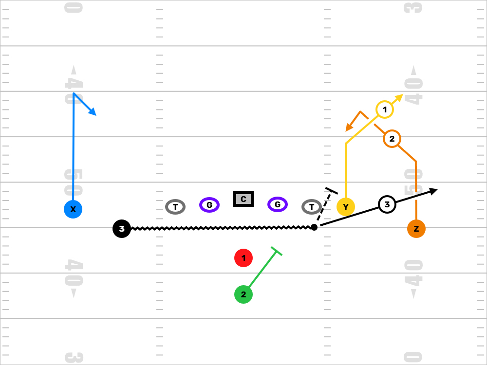
Snag
Overview: Snag is one of our favorite quick-game triangle concepts because it puts stress on flat defenders and gives your quarterback answers versus both man and zone. It’s great from 2x2, 3x1, or motioning into trips — and it’s easy to teach at the youth level with clearly defined roles for each receiver.
How It Works: The concept creates a triangle read. The outside receiver runs a corner route — he’s stretching the coverage vertically. The inside receiver runs a snag or "spot" route — he pushes inside at about 4–5 yards, then settles in a soft spot. The back or third receiver runs an arrow route to the flat. Together, these three routes stress a single defender who's trying to cover too much ground.
Quarterback Read: We use the R4 system. Think of it like this:
- Rhythm: Corner route — hit it if the defense doesn’t sink.
- Read: Spot/Snag — if the corner is covered and the spot defender gets depth, come back underneath.
- Rush: Flat/Arrow — if pressure comes or nobody else is open, dump it off.
Why We Use It: It creates natural spacing and gives the QB built-in answers no matter the coverage. Against man, the snag route can pick defenders. Against zone, the triangle spacing stretches the flat defender and opens up easy throws. It’s a great way to teach your young QB how to progress and understand leverage.
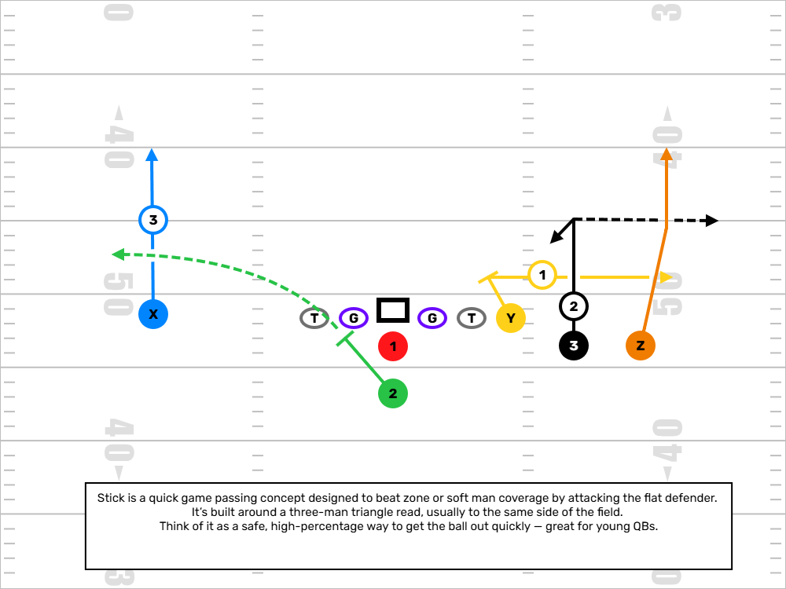
Stick
Overview: Stick is a quick game concept built around reading the flat defender and taking what he gives you. It’s a safe, timing-based play that develops QB decision-making.
How It Works: Outside WR runs a go or fade to clear. Slot WR runs a stick route—6-yard speed out, sometimes with an option to sit. Back motions to the flat to widen the defense. Backside has a climb or post curl.
Quarterback Read: Read the flat defender (OLB). If he sits on the stick, throw to the back. If he chases the back, hit the stick. If both are covered, scan backside to the climb.
Why We Use It: Easy reads, fast release, and quick yards. Teaches WRs to work routes off leverage and QBs to trust timing. At the youth level, it builds quick decision confidence.
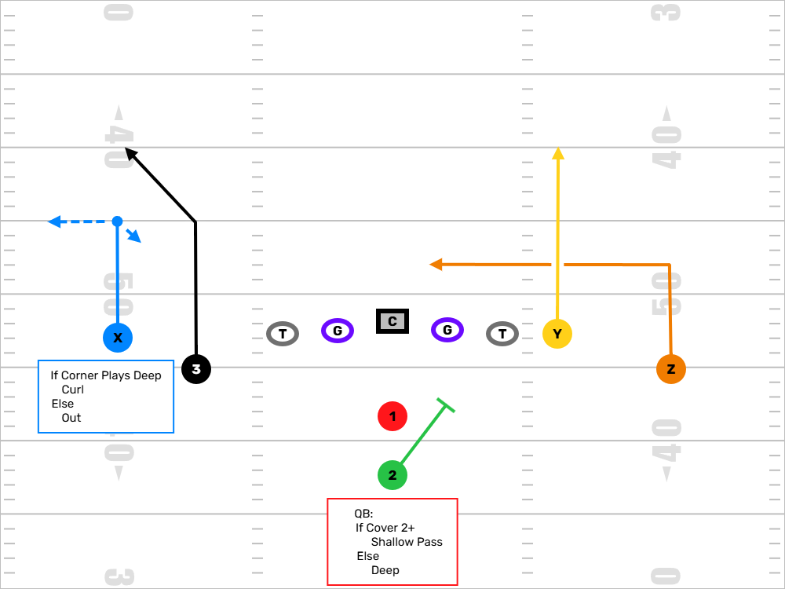
Smash & Dagger
Overview: Smash and Dagger work beautifully together as a mirrored full-field concept. Smash attacks the sideline and puts the cornerback in conflict. Dagger hits the heart of the defense — working the middle with a deep dig behind a clear-out. Together, they create a layered progression for the quarterback and force zone defenders to defend every inch of the field.
How Smash Works: On the front side, you’ve got Smash — the outside receiver runs a 5-yard hitch or curl, and the inside receiver runs a corner route, breaking out at 10–12 yards. This high-lows the cornerback: if he sinks, hit the hitch; if he drives, throw the corner. It's quick, it's clean, and it teaches great decision-making at the youth level.
How Dagger Works: On the backside, Dagger starts with the outside receiver running a clear-out go route to occupy the safety. The slot or inside receiver runs a hard dig at 10–12 yards. This route flashes right in the QB’s line of sight after the Smash side is read. It’s a killer versus Cover 2 and Cover 3 when linebackers widen to flats or hesitate underneath.
Quarterback Read: At the youth level, we don’t ask our quarterbacks to scan the entire field. Instead, we install this as a half-field read. Before the snap, we’ll tell the QB which side we’re working — Smash or Dagger. If it’s Smash, he keys the cornerback: if the corner sinks, throw the hitch; if the corner drives, hit the corner route over the top. If it’s Dagger, his eyes go to the dig — if the linebackers clear out, let it rip. Keep it simple, fast, and confident. One side, one decision, execute.
Why We Use It: This combo lets us stretch the defense vertically and horizontally on both sides. Smash gives us easy completions and forces corners to cover the flat and deep zone. Dagger lets us punish safeties and backers who overplay the Smash side. At the youth level, it teaches your QB to read one side, reset, and throw with confidence — while teaching your receivers how to create and find space.
Coaching Tip: If you're working with a young quarterback, don’t be afraid to tag Smash to just one side of the field early on. As they grow, you can layer in Dagger as the full-field read and teach them to manipulate defenders with their eyes and timing.
Bonus — Running Back Release: If the running back isn't needed for protection or there's no blitz threat, we love to tag him into the play side as a third option. He can release into the flat or swing out late, adding another layer to the Smash side read. Now, instead of just a high-low on the corner, you’re stressing the flat defender as well — turning a 2-man concept into a 3-man triangle that puts stress on every coverage rule. At the youth level, it’s a great way to get the ball to your back in space if the defense overcommits to covering routes downfield.
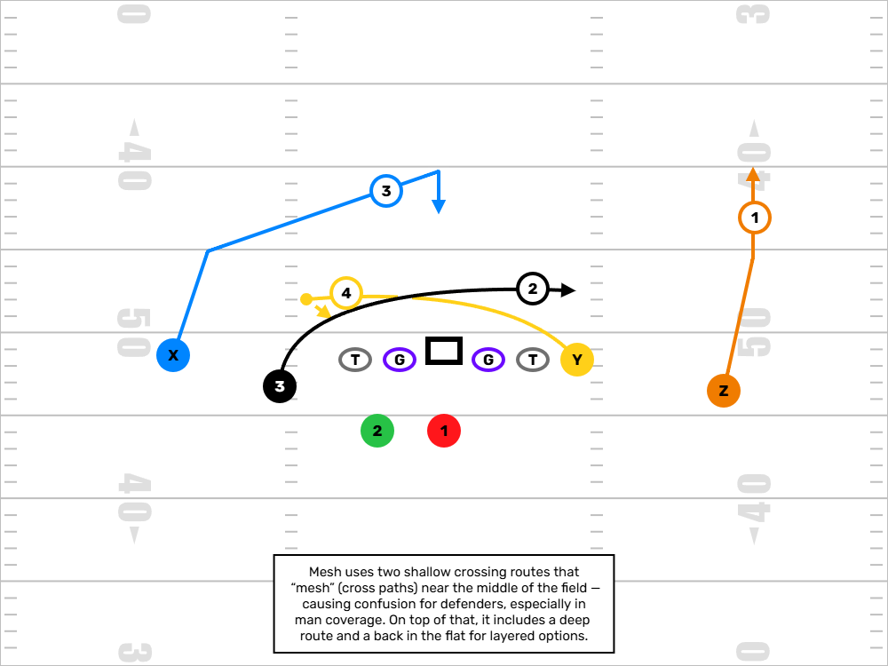
Mesh
Overview: The Mesh concept is one of the most effective ways to create separation versus man coverage, and it still works against zone. It’s all about creating natural traffic across the middle of the field by having two receivers run shallow crossing routes at nearly the same depth.
How It Works: One receiver comes from the right, one from the left. They 'mesh' at about 5 yards over the ball—just enough to make defenders navigate through each other, not a collision. A third receiver, often from the backfield or a tight split, will settle in the middle as the underneath option, or run a spot/option route. Outside receivers or the back may run a corner or vertical to stretch the defense horizontally and vertically.
Quarterback Read: The QB is reading the defender trailing the mesh. If defenders get caught up or rubbed, hit the crossing route in space. If the middle drops open, hit the settle. If it's man and nobody wins, dump to the back or checkdown.
Why We Use It: At every level, defenders struggle to navigate the traffic created by these shallow routes. At the youth level, you get kids wide open just from the confusion. It's simple to teach but hard to defend. The key is timing and spacing—it’s controlled chaos that we use to get guys free.
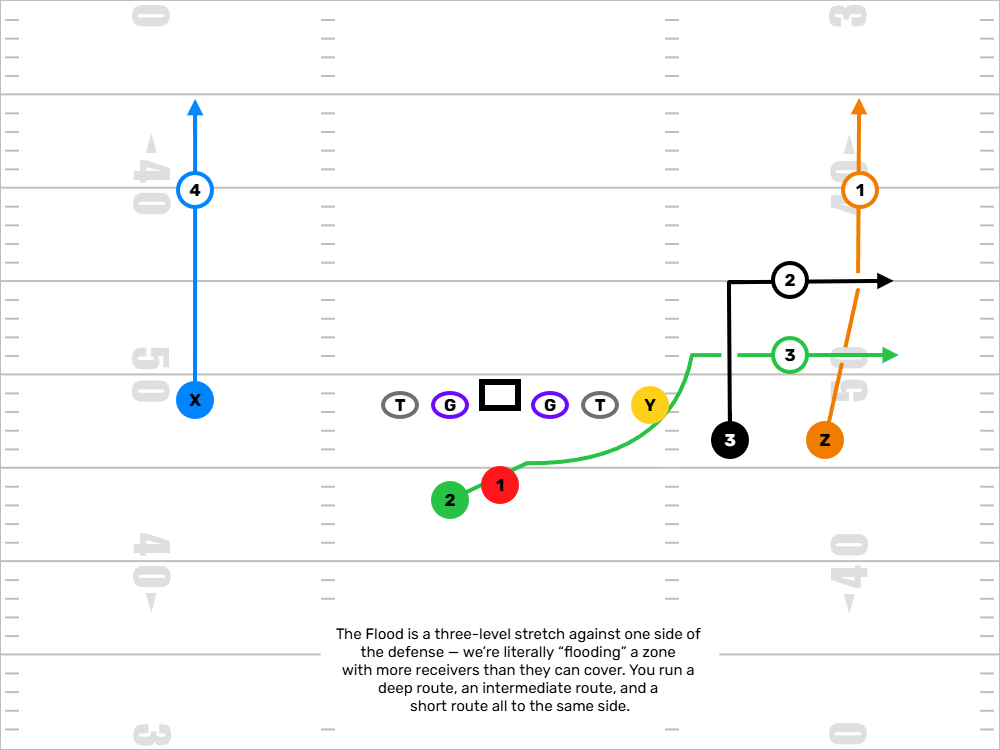
Flood
Overview: The Flood concept is designed to stretch the defense vertically and horizontally on one side of the field. It works especially well against zone coverage by overloading a zone with more routes than defenders can handle.
How It Works: Three receivers run at different depths to the same side of the field: a deep route (usually a post or go), a mid-level out or corner (10–15 yards), and a flat route (typically from a back or motioned receiver). This creates a high-low read for the quarterback. One defender can’t cover all three levels.
Quarterback Read: The QB starts by reading deep to short. If the deep route gets behind coverage, take the shot. If the corner/out is open, hit that in stride. If coverage sinks, dump it to the flat. It’s all about putting the flat defender in conflict—he can’t be in two places at once.
Why We Use It: It’s one of our favorite ways to attack outside the numbers while giving the QB defined, layered reads. Youth defenses struggle to cover the sideline at multiple levels. It’s also easy to disguise—we can run Flood out of Spread, Trips, or Play-Action looks. It’s a clean, repeatable concept that teaches spacing and progression.
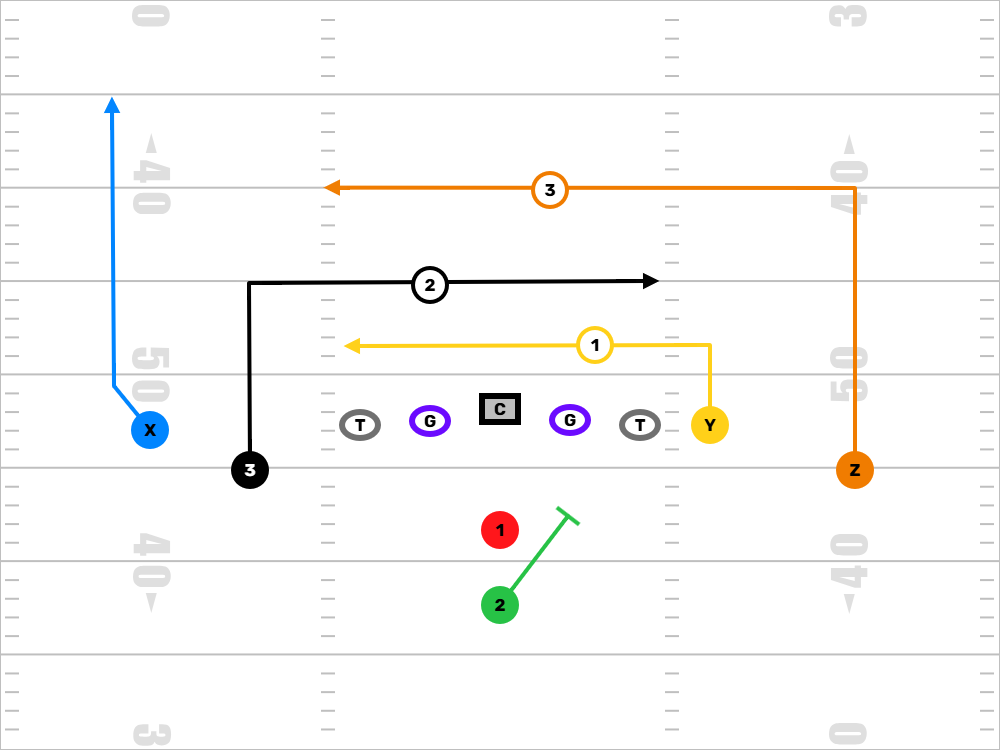
Levels
Overview: Levels is a high-low concept designed to put zone defenders in conflict. We’re attacking the intermediate zones with layered crossing routes at different depths.
How It Works: One receiver runs a shallow drag (around 3–5 yards), while another comes across deeper (10–12 yards). A third receiver, often outside, runs a clear-out or vertical route to pull the top off the defense.
Quarterback Read: Read low to high. Hit the shallow if no one’s there, climb the progression to the dig if the LB vacates, or throw the clear if the top opens up.
Why We Use It: This is a zone beater. If you coach spacing and timing right, someone is always open. At the youth level, it’s great for teaching route discipline and helping QBs develop progression skills.
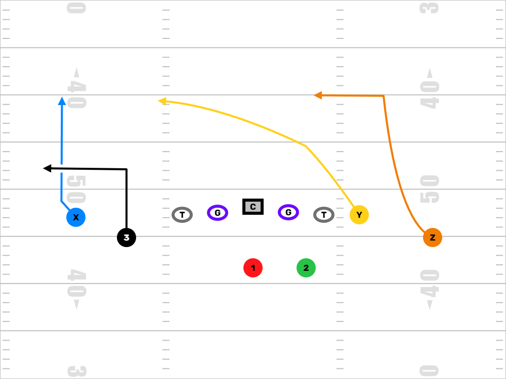
Y-Cross
Overview: Y-Cross is a play-action or drop-back concept designed to attack zone defenses by stretching defenders vertically and horizontally with a crossing route as the main target.
How It Works: The Y receiver (usually TE or slot) runs a deep crossing route (10–15 yards depth). Outside WR runs a go or post to clear the top. A back or third WR runs a flat or checkdown to hold underneath defenders.
Quarterback Read: Eyes start deep. Look for the clear. If it’s not there, scan to the crosser. If LBs drop with the Y, dump it to the back.
Why We Use It: Great against zone and play-action heavy teams. It isolates linebackers and creates big plays with proper timing. At the youth level, it teaches route layering and route depth.
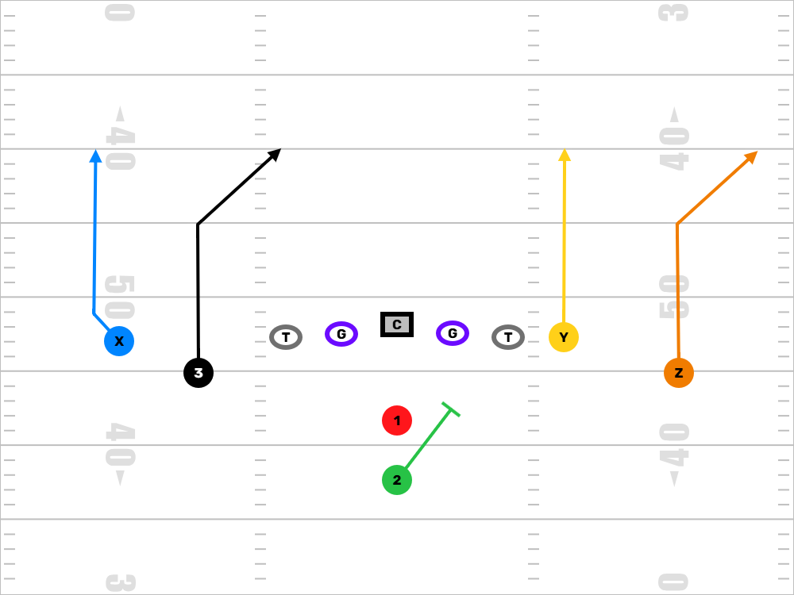
Four Verticals
Overview: Four Verts is all about stretching the defense vertically and forcing safeties to cover too much ground. It’s aggressive and tests coverage integrity.
How It Works: All four eligible receivers release on vertical stems. Inside guys can bend their routes slightly to get open or find space versus Cover 2 or 3. Backs leak out as checkdowns.
Quarterback Read: Key the safeties. If middle is open, hit the seam. If safeties widen, look down the middle. If nothing’s open, hit the checkdown or take off.
Why We Use It: It opens up huge chunks of the field. Even if we don’t throw deep, it forces the defense to respect vertical threats, which opens up underneath game.
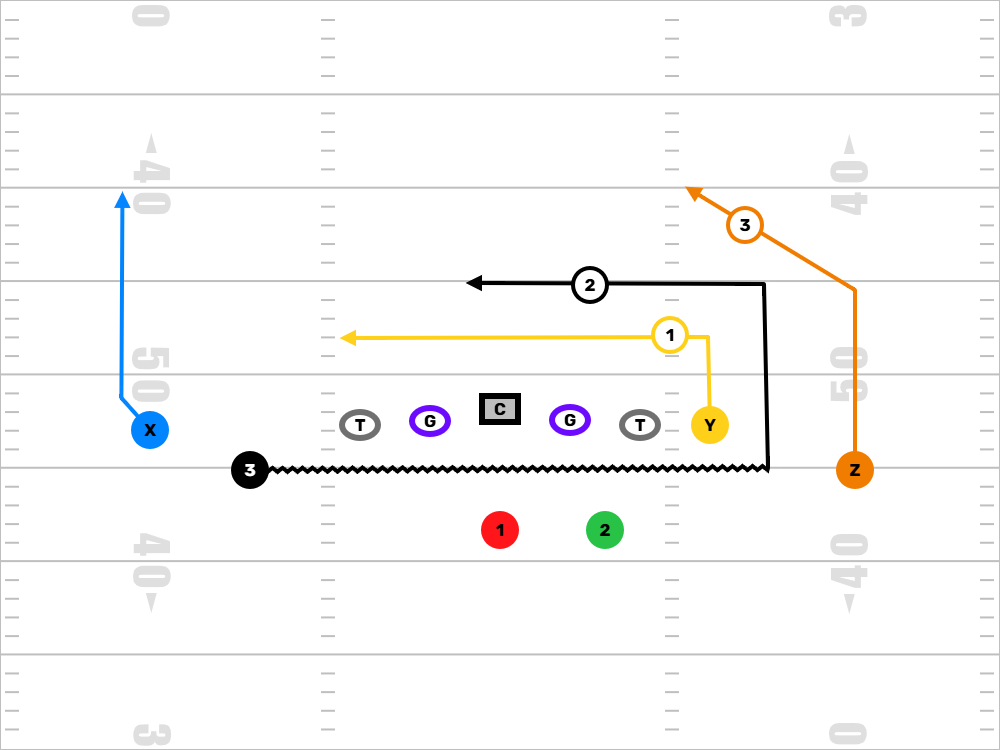
Drive
Overview: Drive is a layered concept that creates a horizontal stretch across the field with built-in vertical options. It’s great versus man or zone.
How It Works: One WR runs a shallow drag, another runs a dig behind it. Outside WRs clear space with verticals or posts. A back or TE runs a checkdown or curl to occupy underneath coverage.
Quarterback Read: Start with the shallow. If it gets picked up or walled off, look to the dig. If LB jumps the dig, look vertical or backside.
Why We Use It: Forces defenders to chase across the field and make choices. At the youth level, it builds confidence in route layering and catch-and-run situations.
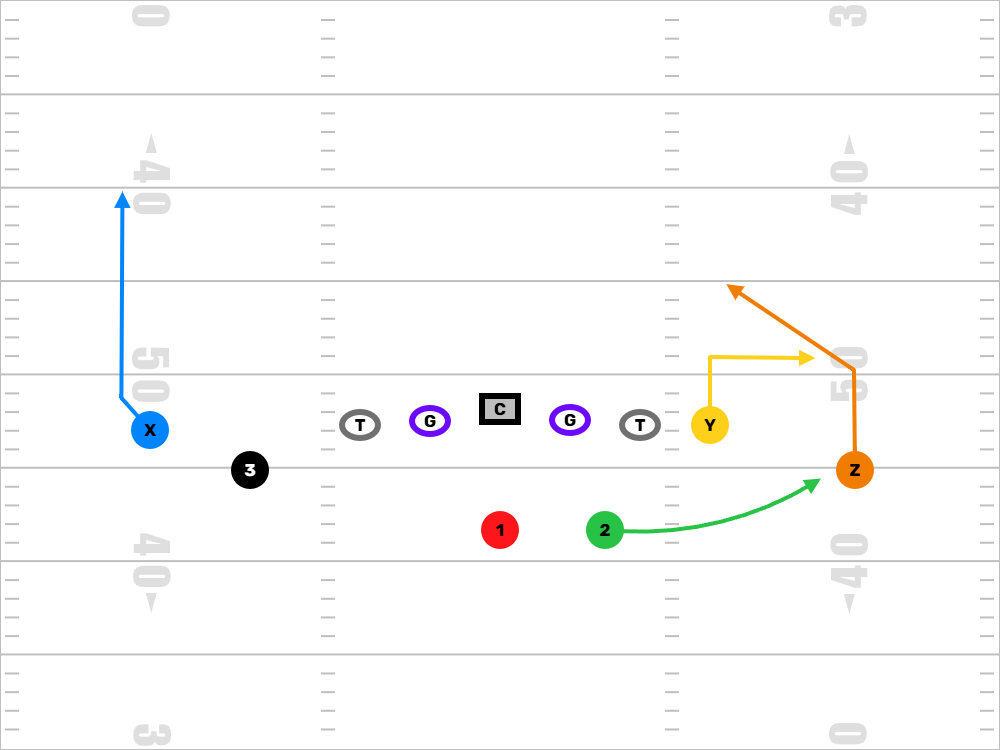
Slant-Flat
Overview: Slant-Flat is a quick-hitting concept that stresses the outside and slot defenders with a horizontal stretch.
How It Works: Outside WR runs a 3-step slant. Inside WR or RB runs a flat route. The idea is to force the corner or OLB to pick one.
Quarterback Read: Key the flat defender. If he drives on the flat, throw the slant behind him. If he drops, hit the flat in stride.
Why We Use It: Great versus man or zone. It’s quick and gets the ball out fast. Ideal for younger QBs building rhythm and WRs learning leverage breaks.
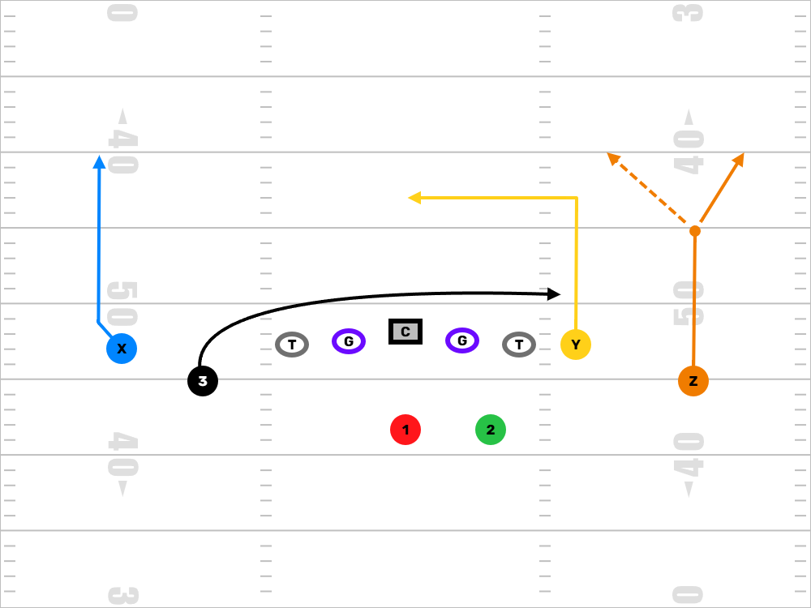
Shallow Cross
Overview: Shallow Cross is designed to beat man coverage and create high-low reads with crossing and dig routes.
How It Works: One receiver runs a shallow cross across the field at 3–5 yards. Another runs a dig or curl at 10–12 yards. A third may run a vertical to stretch the defense.
Quarterback Read: Start shallow, then look to dig. If everyone drops, check it down. It’s a triangle read.
Why We Use It: Great at breaking defenders’ rules and easy to complete for yards after the catch. Teaches WRs how to run through traffic and QBs how to progress across the field.
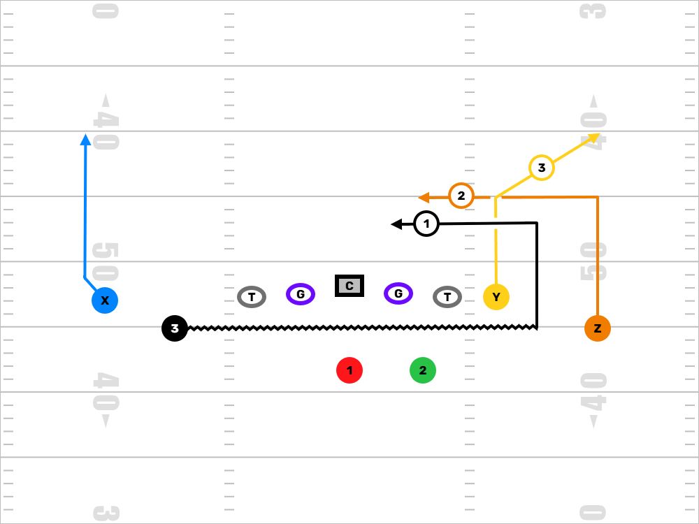
Double China
Overview: Double Chinas is a mirrored passing concept built to beat man or zone by putting stress on inside defenders. Both sides run tight, inside-breaking routes — think double slants or short digs — paired with verticals to clear space. It’s simple, it’s balanced, and it works at all levels.
How It Works: Each side of the formation runs the same combo: the outside receiver stems vertically and breaks inside at 5–7 yards on a deep slant or dig (the "china" route), while the slot or inside receiver pushes vertical and either clears out with a go or bends outside to occupy the safety. It’s a strong man-beater and works against Cover 2 or Cover 3 if the timing and spacing are right.
Quarterback Read: At the youth level, this is a front-side concept. Pick a side pre-snap based on leverage or matchup — typically the side with the best spacing or cleanest release. The QB is keying the inside defender. If that defender widens with the vertical, throw the dig. If he sits or drifts inside, hit the vertical over the top. It’s a one-two decision, built for rhythm throws.
Why We Use It: This is a concept that teaches spacing, route discipline, and how to read leverage. It’s great against man because you get separation on those inside-breaking routes, and against zone, it puts defenders in a bind. At the youth level, it also teaches your QB to be decisive with half-field reads and gives you a balanced way to attack both sides of the field.